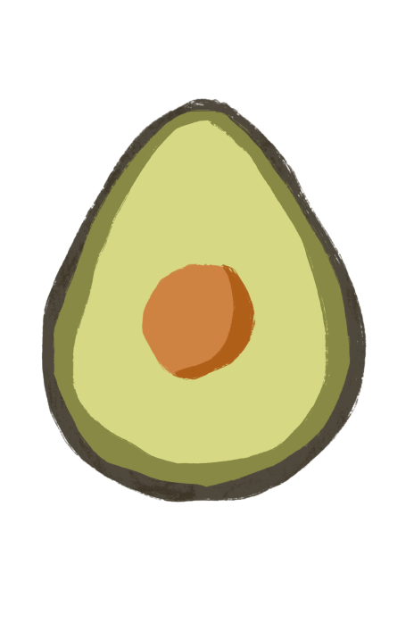

Avocados are:
- High in fat, but it's monounsaturated fat. As long as eat them in moderation it helps lower bad cholesterol.
- Low in sugar and contain fiber (which helps to feel full longer).
- Rich in many vitamins and minerals. In a 100-gram serving, it provides:
- 485 milligrams of potassium
- 81 micrograms of folate
- 0.257 milligrams of vitamin B6
- 10 milligrams of vitamin C
- 2.07 milligrams of vitamin E

Avocados helps:
- Prevent disease and may help ward off:
- Cancer
- Arthritis and osteoporosis
- Depression
- Inflammation
- The nutrients in avocados can also help maintain the health of:
- Digestion
- Blood pressure
- Heart
- Isionregnancy